Portada de Truly Nolen Cali: elige una
El mismo carro oficial de Truly, con fondos de Cali creados con IA (no usan fotos de nadie). Haz clic en una imagen para verla en grande.
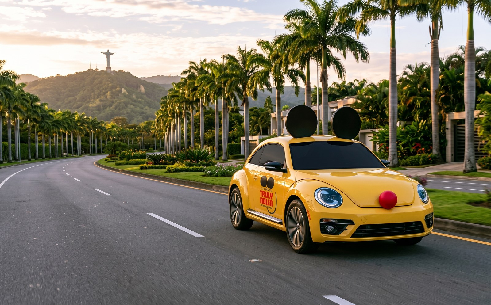
1 Cristo ReyAvenida con palmas reales y el Cristo Rey en el cerro.
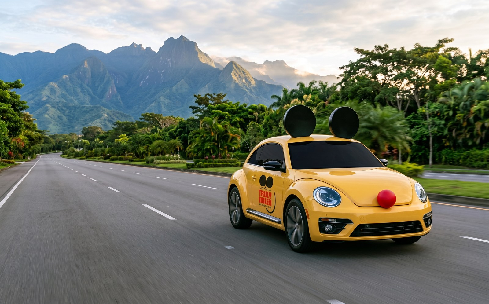
2 Farallones de CaliVía amplia hacia Pance con los Farallones al fondo.
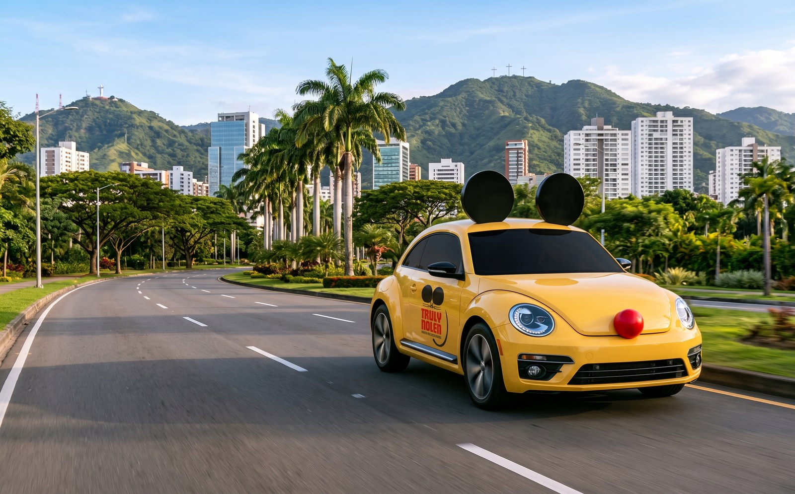
3 Skyline de CaliAvenida moderna con los edificios de Cali y los cerros.
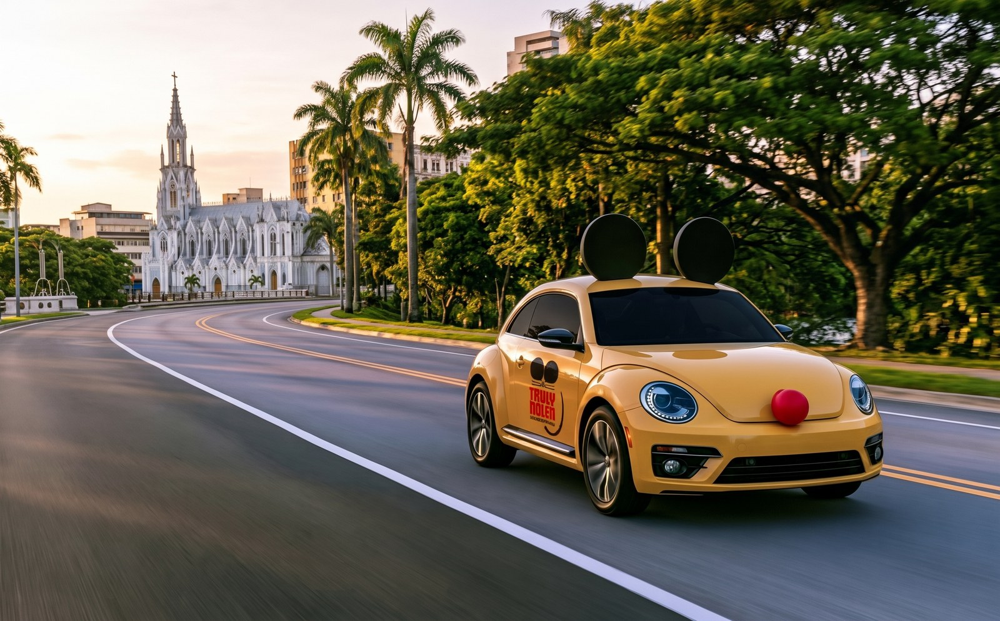
4 La ErmitaAvenida junto al río Cali con la iglesia La Ermita.
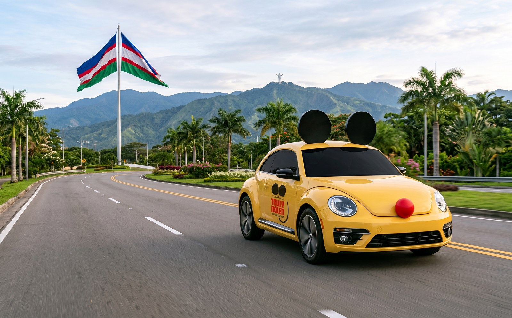
5 Bandera de CaliEntrada sur con la bandera gigante (los colores de la bandera no salieron fieles).
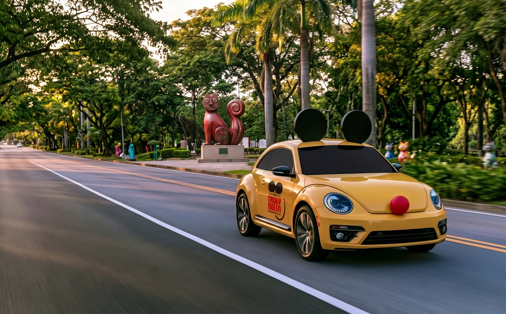
6 Gato del RíoAvenida junto al río Cali con esculturas de gatos (la IA no las hizo idénticas al Gato de Tejada real).
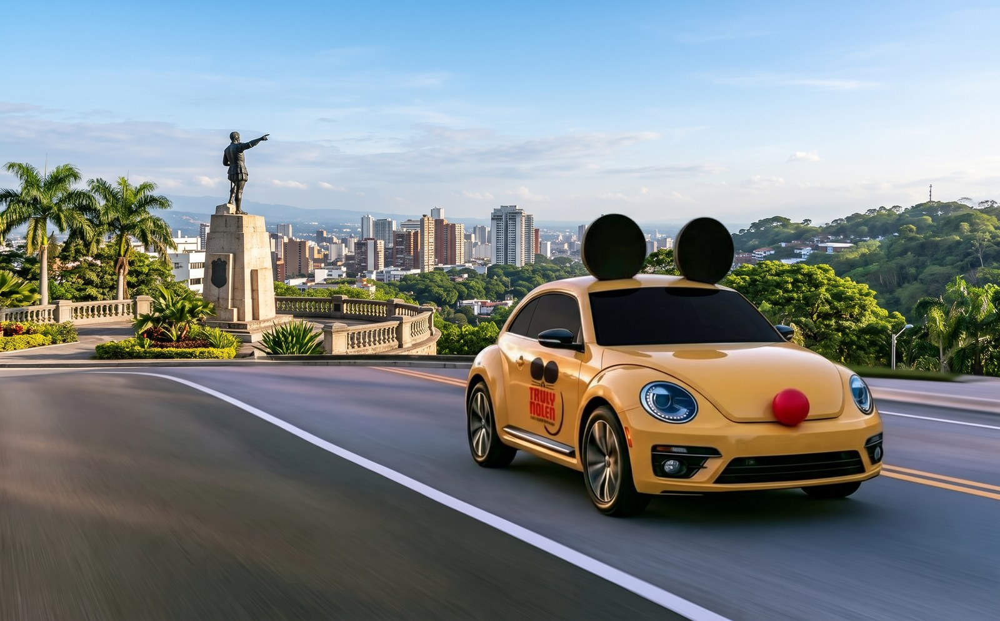
7 Sebastián de BelalcázarVía en la colina con la estatua que señala la ciudad.
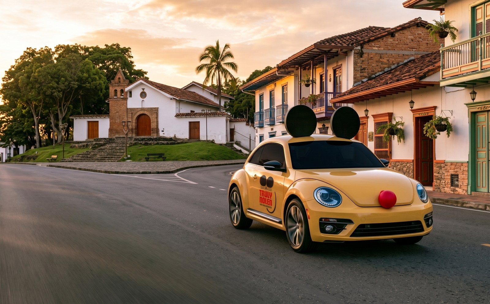
8 San AntonioCalle del barrio San Antonio con su capilla y casas coloniales, al atardecer.
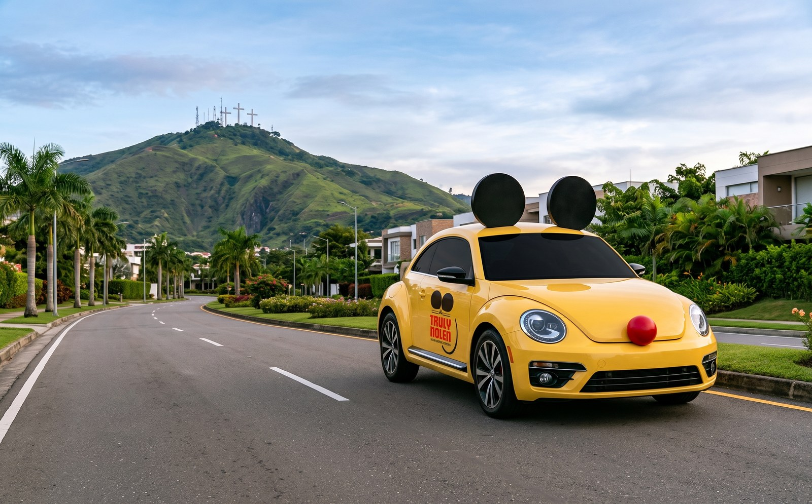
9 Tres CrucesAvenida al pie del Cerro de las Tres Cruces.
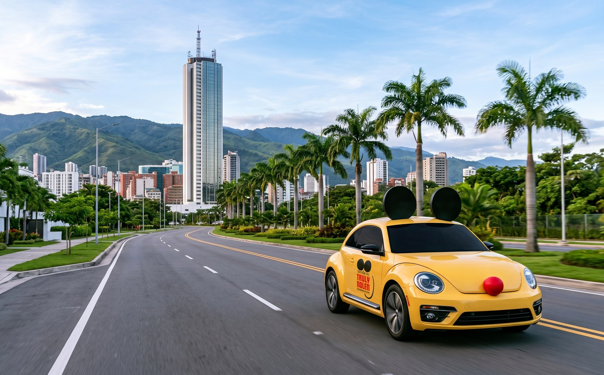
10 Torre de CaliBulevar moderno con la Torre de Cali y los cerros (aquí el carro quedó un poco más chico).
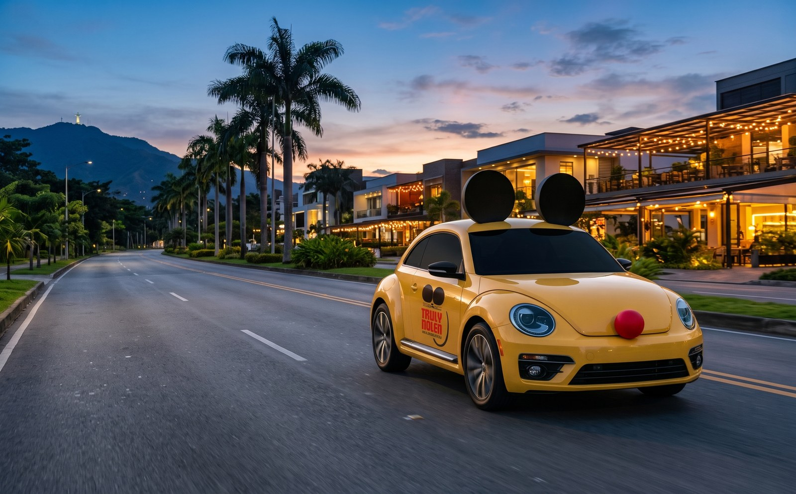
11 Avenida Sexta de nocheLa Sexta al atardecer con luces de restaurantes y palmeras.